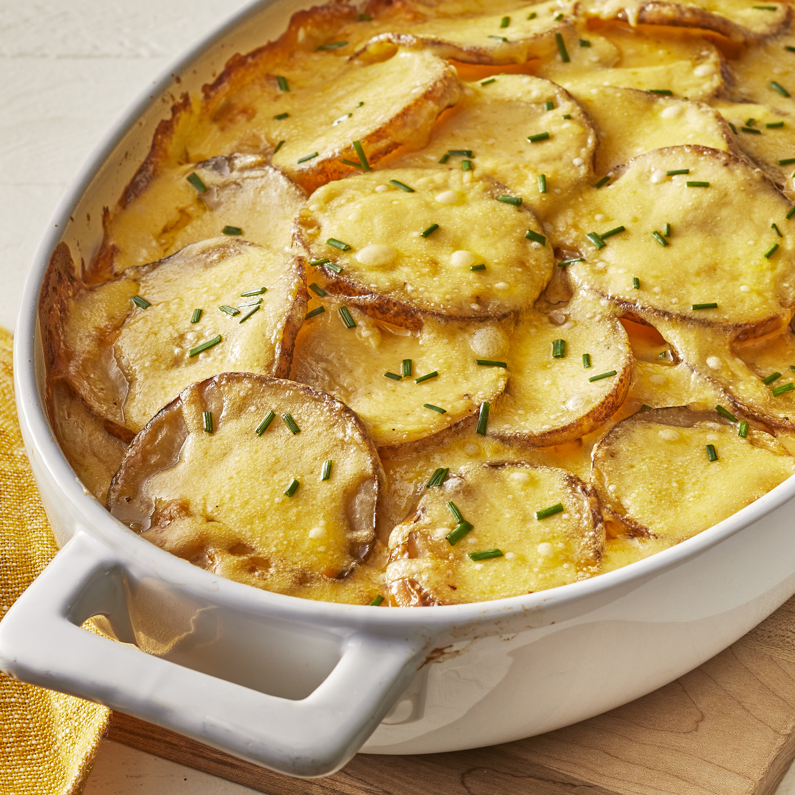

Creamy Potatoes

Description
The creamy cheese sauce and the tender potatoes in this classic French dish combine to make a deliciously addictive experience. It's a great side dish with a roast pork loin or beef tenderloin. Add a green salad and French bread, and you have found the magic path to a man's heart. To avoid lumps in your sauce, add the milk just a little at a time as you stir the flour and butter. Experiment with different cheeses for variety.
Nutrition Facts Per Serving: 499 calories; protein 19.8g; carbohydrates 49.3g; fat 25.4g; cholesterol 77.2mg; sodium 683.4mg.
Ingredients
- 4 russet potatoes, sliced into 1/4 inch slices
- 1 onion, sliced into rings
- salt and pepper to taste
- 3 tablespoons butter
- 3 tablespoons all-purpose flour
- ½ teaspoon salt
- 2 cups milk
- 1½ cups shredded Cheddar cheese
Steps
- Preheat oven to 400 degrees F (200 degrees C). Butter a medium casserole dish.
- Layer 1/2 of the potatoes into bottom of the prepared casserole dish. Top with the onion slices, and add the remaining potatoes. Season with salt and pepper to taste.
- In a medium-size saucepan, melt butter over medium heat. Mix in the flour and salt, and stir constantly with a whisk for one minute. Stir in milk. Cook until mixture has thickened. Stir in cheese all at once, and continue stirring until melted, about 30 to 60 seconds. Pour cheese over the potatoes, and cover the dish with aluminum foil.
- Bake 1 1/2 hours in the preheated oven.
Return to top
Return to main page